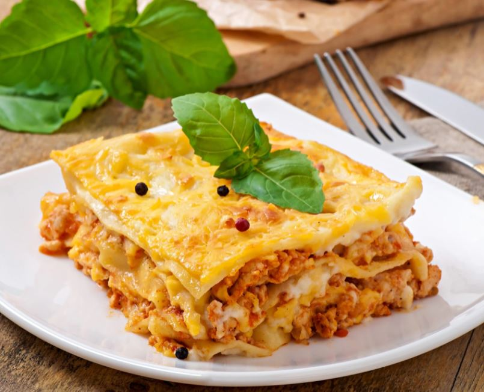

Lasagna

¡Hoy toca comer algo bien rico, abundante, tradicional y llenísimo de sabor!
Te vamos a acompañar paso a paso para que prepares esta receta original de lasaña casera de carne, con una salsa deliciosa para mojar el pancito hasta dejar totalmente limpio el plato. Perfecta para comer con amigos o en familia, como toda buena pasta, ¿o no?
Ingredientes
- 1 masa de lasagna seca y lista para usar
- 1 cebolla
- 1 diente de ajo picado fino
- 800 gramos de carne picada
- 680 gramos de Salsa Lista Pomarola Knorr
- 500 gramos de jamón cocido picado
- 500 gramos de ricota
- 1 taza de queso rallado
- 500 cc de crema de leche
- 1 cucharada de aceite de oliva
- Sal
- Pimienta
- Pimentón
- Ají molido
Pasos
- Empezá salteando la cebolla y el ajo en aceite. Agregale la carne y 3 cucharadas de la salsa pomarola. Cociná 15 minutos más y después condimentá.
- Mientras tanto, mezclá en un bol la ricota con el jamón y la mitad del queso, salpimentá y reservá.
- Realizá una salsa combinando la pomarola restante con la crema de leche, unas cucharadas de aceite de oliva y un toque de pimentón a gusto.
- En un molde para horno intercalá las capas en el siguiente orden: en el fondo la salsa, luego la lasaña seca lista para usar y el relleno de carne, más lasaña, salsa y relleno de ricota hasta completar el molde.
- Agregale salsa y queso rallado a la tapa final y llevala al horno bien caliente por 15 minutos aproximadamente. Y lista la lasaña. ¡A comer!